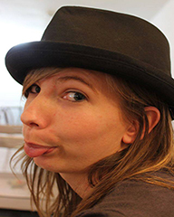
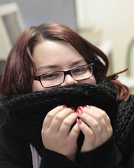

Odysseus est un réseau social basé sur les voyages. Il vous offre la possibilité de partager vos dernières aventures et trouver de nouvelles destinations pour vos prochains périples.
L'équipe d'Odysseus est composée de 6 membres au total, tous issus d'une deuxième année de DUT à l'IUT de Lens, mais dans deux fillières à la fois différentes et complémentaires. Trois sont en Informatique et trois sont en Métiers du Multimédia et d'Internet.
Dans le cadre de ce projet, ils ont dû travailler ensemble pour créer un réseau social qui vous donne envie de voyager et surtout de faie partager vos expériences passés et vos envies futures.
Les Informaticiens |
||
Maxime Maroine |
Marc Baloup |
Veis Oudjail |
Les MMIstes |
||
|  |  | |
Margot St-Leger |
Paul Foulont |
Louisa Wable |